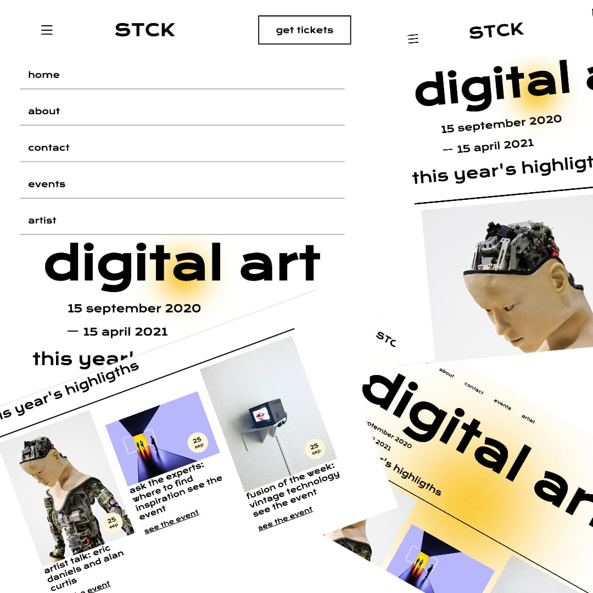

#02
digitalArt

Al igual que en el proyecto anterior y con la idea de practicar este concepto, la web de ‘Digital Art’ esta maquetada al completo utilizando ‘display flex’. Podríamos decir que es un nivel más alto que en la web Pixar, ya que cuenta con pequeños detalles que conllevan más trabajo. Sin embargo, es una web sencilla y resultona con la que aprendí bastante a medida que avanzaba en su maquetación.


